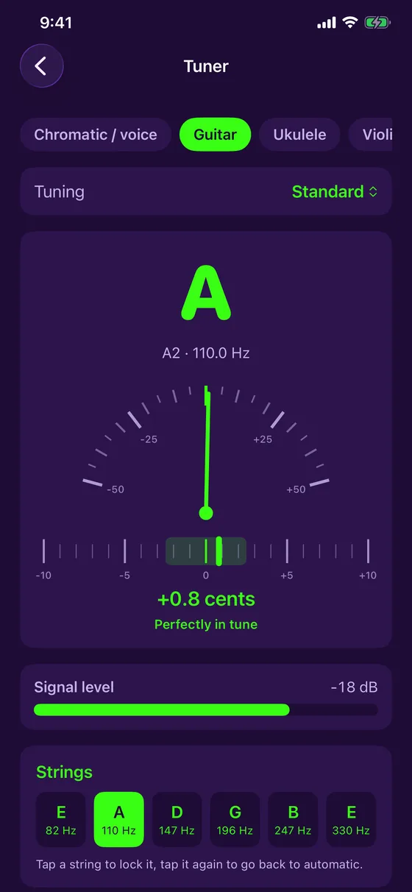
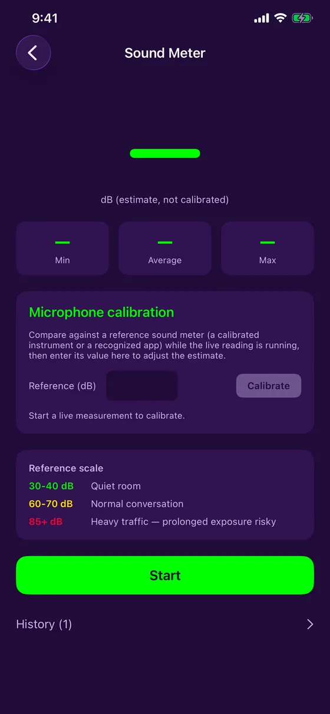
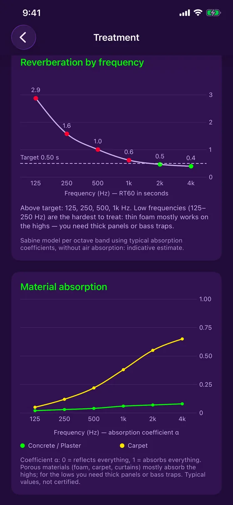
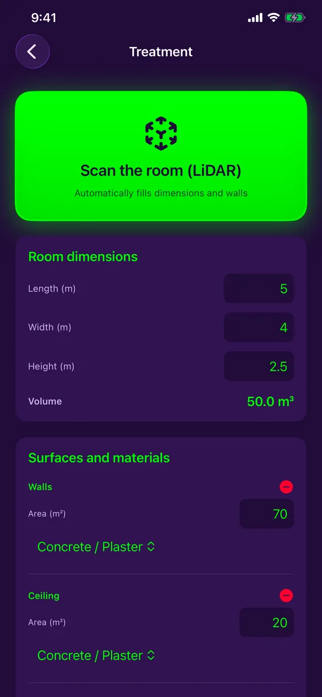
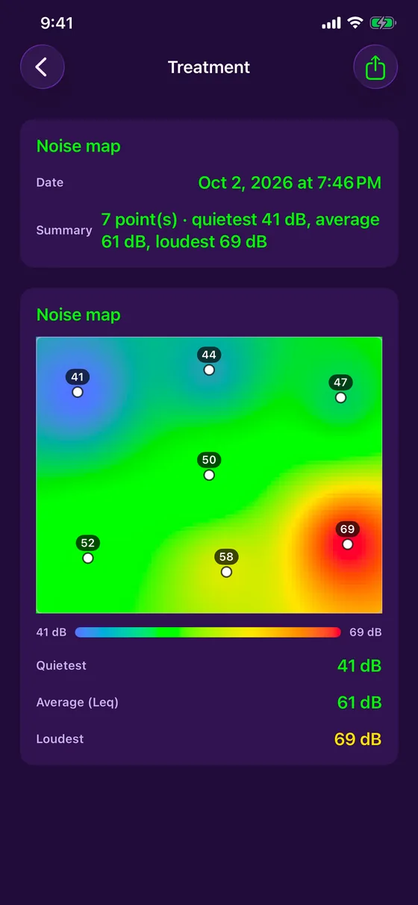
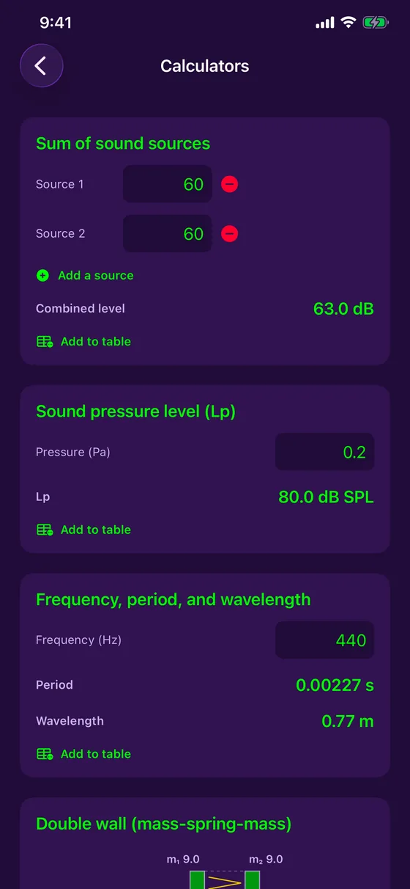
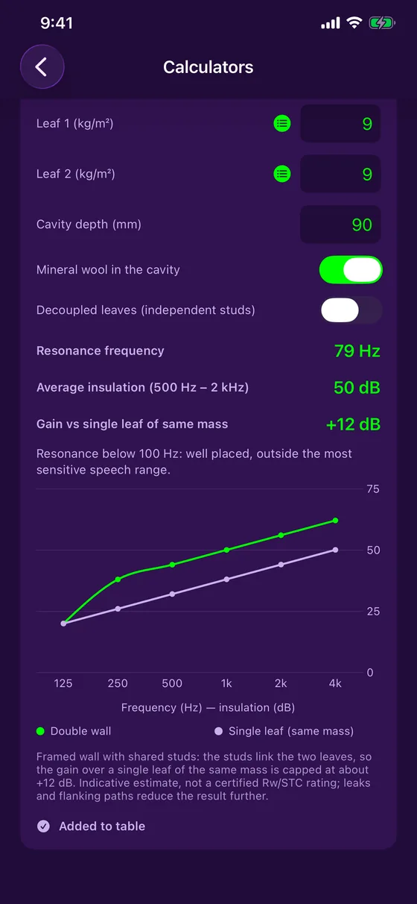
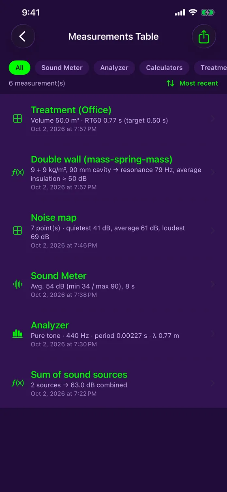

Features
Everything you need to measure and correct a room
The iPhone's microphone and camera, used to measure, calculate and document a space's acoustics — without leaving the app, without a connection.
Measure
Free: what you need to measure every day
Live sound meter
Real-time dB level with minimum, average and maximum, and two chart styles (Festival, Studio).
Microphone calibration
Compare with a reference meter and adjust: every measurement says whether it is calibrated or estimated.
Spectrum analyzer
Live frequency analysis (FFT) and sound classification: pure tone, complex or noise.
Pure tone
For a pure tone, frequency, period and wavelength are calculated for you.
Color-coded history
Each session is saved with its curve: green, yellow or red depending on the level.
Measurements table
A log of everything you measure, with filter, sort and export to a PDF report with charts.
In detail
Every tool, up close
Tuner
Tune by ear, or let the needle do the work.
- Guitar (5 tunings), ukulele (including low-G and baritone), violin, viola, cello, mandolin and banjo
- Chromatic mode for voice and any note
- A needle with live cents and a ±10-cent fine-tuning strip, with a vibration when in tune
- A steadied reading that ignores stray measurements, with a signal level meter
- Reference pitch adjustable from 430 to 450 Hz, and free

Sound meter, calibration and history
The simplest sound meter to open in the field.
- Live level, minimum, average and maximum
- Microphone calibration against a reference instrument, with the calibration state noted on every measurement
- Session history with its color-coded curve
- Share the image or add it to the measurements table

Reverberation by frequency
Know where the room has a problem, not just whether it has one.
- RT60 per octave band, from 125 Hz to 4 kHz, against the target for your use case (office, studio, meeting room, home theater)
- Bands above the target are flagged, with a tip for the bass
- Absorption curves for every material in the room, from 10 materials
- Sabine model and typical coefficients: an indicative estimate

From scan to foam to add
Scan the room, let the app do the math.
- On iPhone Pro (LiDAR), one sweep fills in the dimensions and the area of every wall
- Without LiDAR, enter the dimensions by hand: everything else works
- 3D isometric room diagram, carried into the table and the PDF report
- How much acoustic foam to add to reach the target
- Live RT60 measurement with a short noise burst

Noise map
See where a room is noisy at a glance.
- Tap the room plan and measure five seconds at each spot
- Heat map of the calm and noisy zones
- Quietest level, average (Leq) and loudest level
- Saved to the measurements table and the PDF report

Acoustic calculators
The trade's formulas, with no paper or calculator.
- Sum of sound sources: how many dB together
- Sound pressure level from pressure in pascals
- Frequency, period and wavelength
- Every result is added to the table with one tap

Double wall
Estimate a partition's insulation before you build it.
- Mass-spring-mass calculation from each leaf's mass and the cavity depth
- Resonance frequency and insulation per octave band
- With or without mineral wool, and decoupled leaves as an option
- Indicative estimate, not a certified Rw/STC rating

Measurements table and PDF reports
Everything you measure stays organized and shareable.
- Every measurement is added to a central table, filterable by type
- PDF report with charts and the room's 3D diagram
- Save a chart to Photos, or share it with iOS's tools
- Everything stays on your device: no account, no server

Free or Acoustic Detector Complete
| Free | Complete | |
|---|---|---|
| Live sound meter and calibration | ✓ | ✓ |
| Spectrum analyzer | ✓ | ✓ |
| Tuner | ✓ | ✓ |
| Measurements table and PDF export | ✓ | ✓ |
| Room RT60 and foam to add | — | ✓ |
| RT60 per octave band and absorption | — | ✓ |
| LiDAR room scan | — | ✓ |
| Noise map | — | ✓ |
| Calculators and double wall | — | ✓ |
"Acoustic Detector Complete" is a one-time CA$4.99 purchase, with no subscription.
Ready to listen to your room?
Acoustic Detector is available on the App Store, for iPhone. Free, with one optional purchase.
Download on the App Store